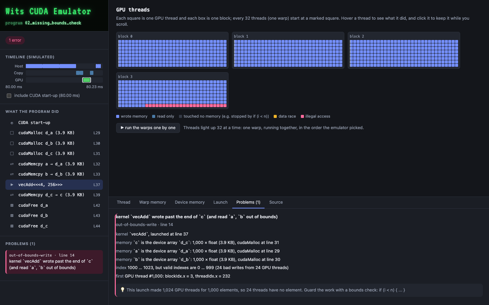
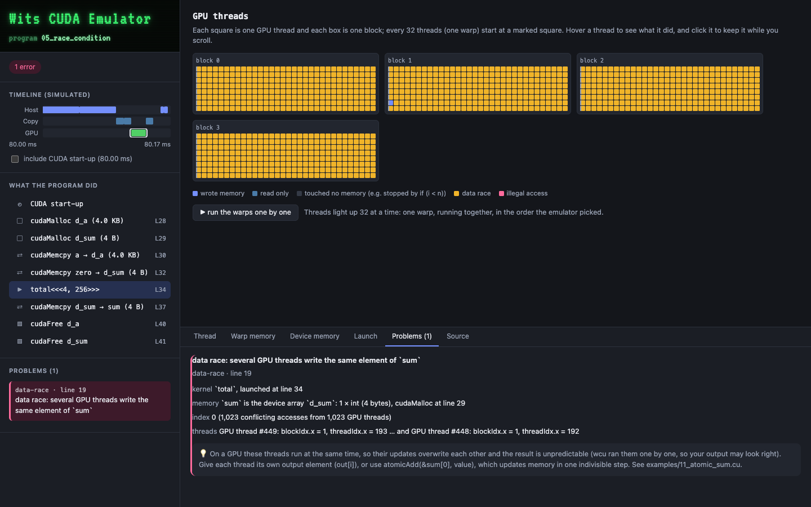

Explains CUDA mistakes
Out-of-bounds writes, host pointers passed to kernels, reads of memory nobody wrote, data races and rounded-down block counts. Each one is reported with the source line, the GPU thread, the array and a fix.
CUDA emulator for learning GPU programming
WCU runs CUDA programs on any Mac or Linux CPU. When a kernel writes out of bounds or two GPU threads race, it tells you the source line, the thread that did it, and how to fix it. Then it draws the whole run.
Needs only clang and make. No NVIDIA drivers or CUDA toolkit.
wcu error[out-of-bounds-write]: kernel `vecAdd` wrote past the end of `c` --> examples/02_missing_bounds_check.cu:14 14 | c[i] = a[i] + b[i]; = kernel `vecAdd`, launched at line 37 = memory `c` is the device array `d_c`: 1,000 × float (3.9 KB) = index 1000 … 1023, valid indexes are 0 … 999 = first GPU thread #1,000: blockIdx.x = 3, threadIdx.x = 232 = hint 1,024 GPU threads for 1,000 elements. Guard the work: if (i < n) { ... } ── wcu run summary ───────────────────────────── kernels 1 launch, 1,024 GPU threads in 32 warps time 80.22 ms simulated problems 1 error, 0 warnings
WCU is slow on purpose. It exists so that blocks and threads, separate host and device memory, slow copies and races between threads can be seen, learned and debugged on a laptop.
Out-of-bounds writes, host pointers passed to kernels, reads of memory nobody wrote, data races and rounded-down block counts. Each one is reported with the source line, the GPU thread, the array and a fix.
Each program writes a self-contained HTML page with a timeline, the grid of blocks and threads, and which thread read or wrote which element of which array, with the values.
CPU timings would teach the wrong lessons, so WCU models what a GPU pays for: CUDA start-up, PCIe copies, launch overhead and memory transactions. You learn why small problems don't speed up.
These are real visualizations from the bundled examples. Every run produces one, and it opens offline.

if (i < n): the last 24 threads of block 3 wrote past the end of the array.
sum[0]. WCU flags the race even when the answer happens to come out right.WCU runs on macOS (Intel and Apple Silicon) and Linux. On a Mac, install the compiler with xcode-select --install.
make.--open to see the visualization in your browser.bin to your PATH to use wcu, and the nvcc stand-in, from anywhere.# build git clone https://github.com/Mukhunyeledzi-Muthuphei/wits-cuda-emulator.git cd wits-cuda-emulator make # run a CUDA program and open the visualization bin/wcu run --open examples/01_vector_add.cu # other commands wcu build file.cu -o program wcu translate file.cu # show the generated C
__global__ void vecAdd(const float *a, const float *b, float *c, int n) { int i = blockIdx.x * blockDim.x + threadIdx.x; if (i < n) c[i] = a[i] + b[i]; } vecAdd<<<numBlocks, threadsPerBlock>>>(d_a, d_b, d_c, N);
Each one is a small, complete CUDA program. The buggy ones are the mistakes people actually make when learning GPU programming.
| File | What it shows |
|---|---|
01_vector_add.cu | A correct program, end to end |
02_missing_bounds_check.cu | No if (i < n): 1,024 threads, 1,000 elements |
03_host_pointer_in_kernel.cu | Passing a (host) instead of d_a (device) |
04_forgot_to_copy.cu | A kernel reading device memory nobody filled |
05_race_condition.cu | Every thread updating sum[0] |
06_grayscale_2d.cu | A correct 2D grid of 2D blocks |
07_device_pointer_on_host.cu | The CPU reading GPU memory directly |
08_block_count_rounding.cu | N / threadsPerBlock silently dropping the tail |
09_bytes_not_elements.cu | cudaMemcpy counting bytes, not elements |
10_host_function_in_kernel.cu | Mistakes caught before the program runs |
11_atomic_sum.cu | The fix for 05, using atomicAdd |
12_coalescing.cu | Warps: the same work, done twice, with 32× the memory traffic |
Runtime errors are reported with the source line and GPU thread. A program with errors exits with status 1.
WCU translates CUDA C into plain C, compiles it with clang and links it against an emulated GPU runtime. Line numbers are preserved, so compiler errors point into your .cu file.
<<< >>> becomes a loop over GPU threads, and every a[i], *p and p->x in kernel code becomes a checked access.
Device pointers live in a reserved, unreadable region, so touching one from the CPU is caught and explained. Every byte records whether anything wrote it.
Threads run in warps of 32, and the warps are shuffled like real scheduling. Code whose result depends on the order is exposed, not hidden.
Times in the summary and the visualization come from a model, not from your CPU. The lesson that carries over to real hardware is the shape of the bars: copies and start-up dominate small problems, and kernels only pay off when there is enough work.
| Quantity | Value |
|---|---|
| CUDA start-up (first call) | 80 ms |
| Kernel launch overhead | 0.02 ms |
| Warp size | 32 threads |
| Memory transaction | 128 bytes, 0.25 ns each |
| Instruction issued to one warp | 20 ns |
| Host ⇄ device copy | 6 GB/s (12 GB/s pinned) |
Every student can run CUDA assignments on their own laptop, without lab machines or cloud GPUs.
.wcu.html page to feedback. It is a single file that opens offline.make test runs every example against expected output.__shared__ memory and __syncthreads() are not supported yet, which rules out tiled matrix multiply..cu files.Yes. WCU translates CUDA C into plain C and runs every GPU thread on your CPU, so CUDA programs build and run on any Mac or Linux machine with clang and make. It is built for learning and debugging, not for speed.
Yes. WCU needs only clang and make, which come with the Xcode command-line tools (xcode-select --install). It runs on Intel and Apple Silicon Macs and on Linux.
While the program runs: out-of-bounds reads and writes, reads of uninitialized device memory, data races between GPU threads, host pointers passed to kernels, device pointers used on the host, use-after-free, double free, memcpy direction and size mistakes, partial coverage from rounded-down block counts, memory leaks and unchecked errors. At compile time: host functions called from kernels, kernels called without <<< >>>, threadIdx in host code and kernels that return a value.
That is the goal. Programs use ordinary CUDA C (__global__, <<<blocks, threads>>>, cudaMalloc, cudaMemcpy, threadIdx) and are meant to move to real hardware unchanged, as long as they stay within the supported subset.
No. Timings on a CPU would teach the wrong lessons, so WCU reports a simulated GPU clock that models CUDA start-up, PCIe copies, kernel launch overhead and memory transactions. The shape of the bars carries over to real hardware; the exact numbers do not.
Yes. A program with errors exits with status 1, so assignments can be graded by running them, and the self-contained .wcu.html visualization can be attached to feedback. It opens offline.
Clone the repository, run make, and open your first visualization.